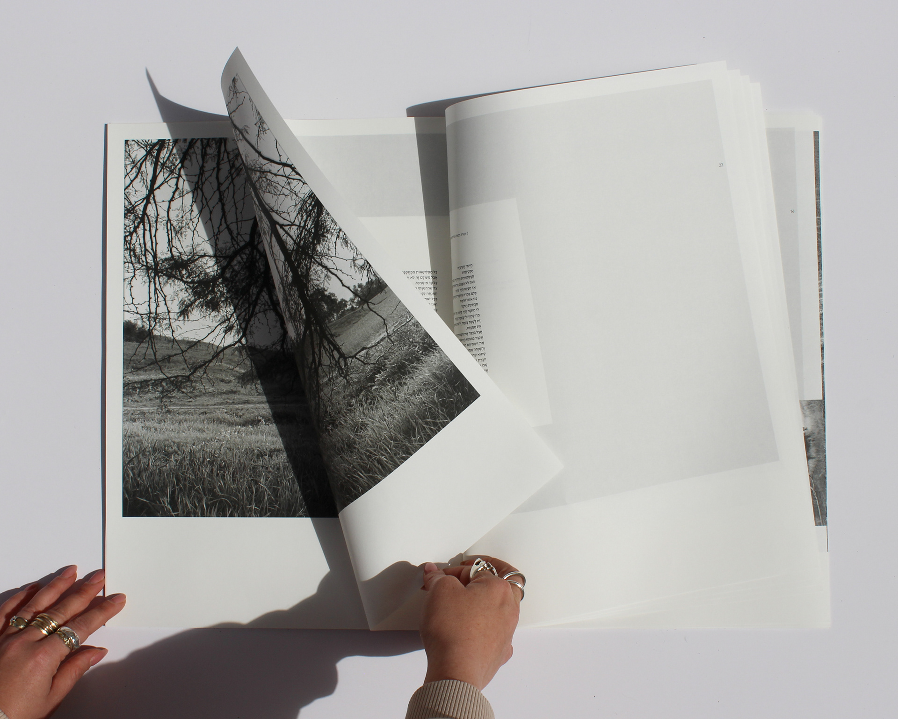

A booklet exploring the tight and absurd parallel between the reality
show "Big Brother" and George Orwell’s dystopian novel "1984".
How did reality show creators manage to transform a dystopia into
such a desirable cultural model? What does that say about us — as a society and as individuals?